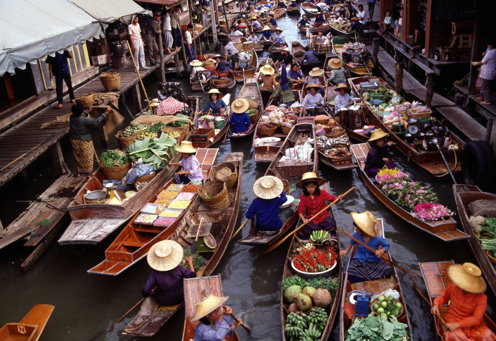
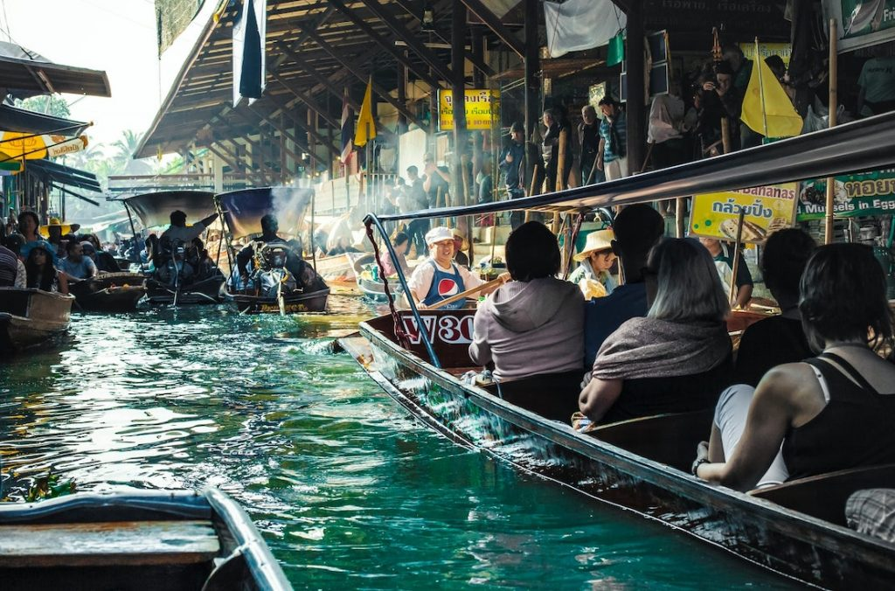
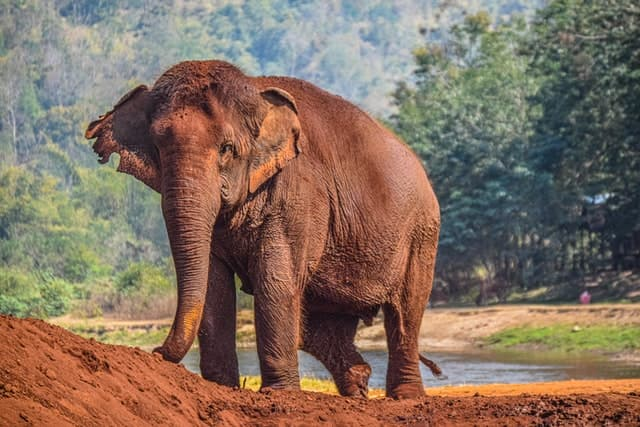

Los Templos de Bangkok
Un recorrido por estos sitios sagrados ofrece una visión de la cultura y la historia tailandesas.
Templo del Buda Esmeralda (Wat Phra Kaew)
Templo del Amanecer (Wat Arun)
Mercados Flotantes
Dirígete a los mercados flotantes, como el de Damnoen Saduak o el de Amphawa, donde podrás navegar en un bote a través de los canales y comprar productos frescos, artesanías y comida local.


Trekking
Embárcate en una aventura de senderismo por las montañas del norte de Tailandia, en lugares como Chiang Mai o Chiang Rai. Podrás explorar paisajes impresionantes, visitar tribus locales y aprender sobre su cultura.

Parque Natural Doi Inthanon
Santuario de Elefantes
Visita un santuario ético de elefantes en el norte de Tailandia, donde puedes interactuar con estos majestuosos animales de una manera responsable y aprender sobre su conservación.
